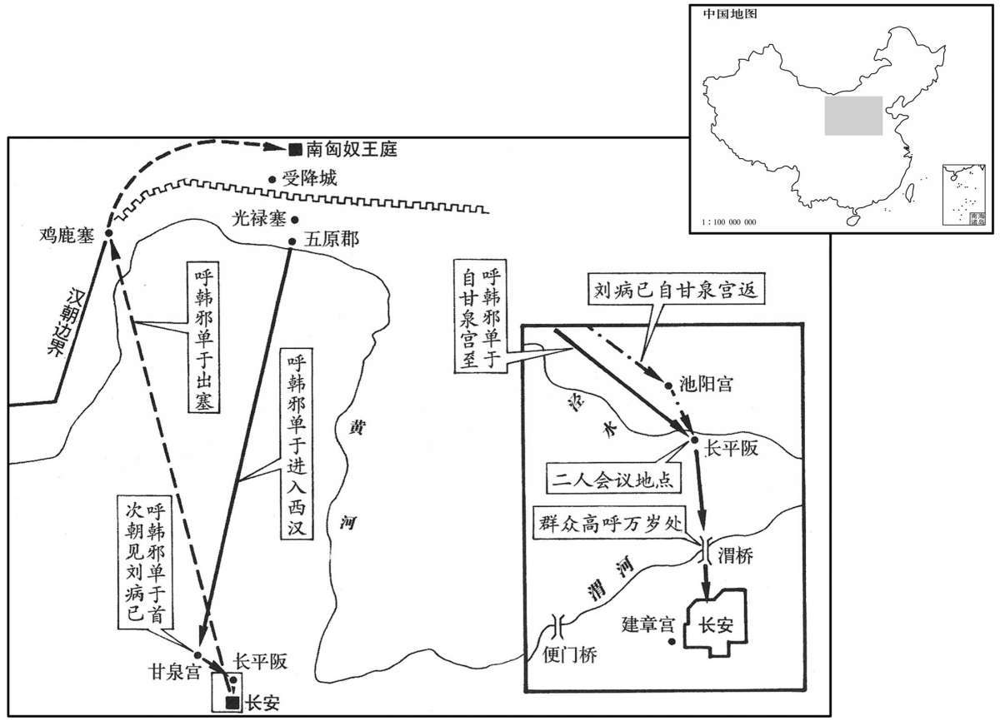

公元前51年资治通鉴：本年记事、原文与白话对照
按原书编年位置阅读；追叙和史论不等于本年发生的事件。白话采用所据译本，缺译不以生成译文补齐。
卷27 · 本年记事
公元前51年 · 汉中宗孝宣皇帝甘露三年
甘露三年〔（庚午、前五一）〕
本年事件索引（现代整理）
春，正月，上行幸甘泉，郊泰畤。
春季，正月，汉宣帝前往甘泉，在泰祭祀天神。
匈奴呼韩邪单于来朝，赞谒称藩臣而不名；赐以冠带、衣裳，黄金玺、盭绶，〔白虎通：衣者，隐也；裳者，障也；所以隐形自障蔽也。玺，斯氏翻。绶，音受。师古曰：盭，古戾字。戾，草名也。以戾染绶，亦诸侯王之制也。〕玉具剑、佩刀，弓一张，矢四发，〔孟康曰：玉具剑，摽首、镡、卫尽用玉为之也。师古曰：镡，剑口旁横出者也。卫，剑鼻也。镡，音淫。“卫”字本作“彘”，其音同耳。服虔曰：发，十二矢也。韦昭曰：射礼，三而止，每射四矢，故以十二为一发也。师古曰：发，犹今言箭一放、两放也。今则以一矢为一放也。〕棨戟十，〔师古曰：棨，有衣之戟也。棨，音启。〕安车一乘，鞍勒一具，〔师古曰：勒，马辔也。〕马十五匹，黄金二十斤，钱二十万，衣被七十七袭，〔师古曰：一称为一袭，犹今人之言一副衣服也。〕锦绣、绮縠、八千匹，絮六千斤。礼毕，使使者道单于先行宿长平。〔师古曰：道，读曰导，导引也。如淳曰：长平，阪名也，在池阳南。上原之阪有长平观，去长安五十里。师古曰：泾水之南原，即今所谓睚城阪也。〕上自甘泉宿池阳宫。〔池阳县属左冯翊，有离宫在焉。贤曰：池阳县故城，在今泾阳县西北。〕上登长平阪，诏单于毋谒，〔师古曰：不令拜也。〕其左右当户〔【章：甲十五行本“户”下有“群臣”二字；乙十一行本同；孔本同。】〕皆得列观，及诸蛮夷君长、王、侯数万，咸迎于渭桥下，夹道陈。〔陈，如字，陈列也，又涂也。〕上登渭桥，咸称万岁。单于就邸长安。置酒建章宫，飨赐单于，观以珍宝。〔师古曰：观，示也。观，古玩翻。〕二月，遣单于归国。单于自请“愿留居幕南光禄塞下；〔师古曰：徐自为所筑者也。余按武帝遣光禄徐自为出五原塞，筑亭障列城后，人因谓之光禄塞。〕有急，保汉受降城。”〔恐郅支来攻，故请有急入城自保。〕汉遣长乐卫尉、高昌侯董忠、〔功臣表，高昌侯食邑于千乘。乐，音洛。〕骑都尉韩昌将骑万六千，又发边郡士马以千数，送单于出朔方鸡鹿塞。〔师古曰：鸡鹿塞车，在朔方寙浑县之西北。〕诏忠等留卫单于，助诛不服，又转边谷米糒，〔师古曰：糒，干饭也，音备。〕前后三万四千斛，给赡其食。先是，自乌孙以西至安息诸国近匈奴者，皆畏匈奴而轻汉；〔先，悉荐翻。近，其靳翻。〕及呼韩邪〔【章：甲十五行本“邪”下有“单于”二字；乙十一行本同；孔本同。】〕朝汉后，咸尊汉矣。
匈奴呼韩邪单于前来朝见，拜见汉宣帝时，自称藩臣而不称名字。汉宣帝赐给他冠带、官衣服，黄金印玺、绿色绶带，玉石装饰的宝剑、佩刀、一张弓、四十八支箭，十支有戟套的长戟，安车一辆，马鞍马辔一套，马十五匹，黄金二十斤，钱二十万，衣衫被褥七十一套，锦锈、绸缎、各种细绢八千匹，丝绵六千斤。朝会典礼结束后，汉宣帝派使臣带领单于先至长平阪住宿，自己也从甘泉前往池阳宫住宿。汉宣帝登上长平阪，下诏命单于不必参拜，允许单于左右的大臣列队观瞻，蛮夷各国的国君，各诸侯王、列侯等数万人，全部来到渭桥下夹道迎接。汉宣帝登上渭桥，众人齐呼万岁。过后单于到长安居住。汉宣帝在建章宫设酒宴款待单于，请他观赏珍宝。二月，送单于回国。单于自己请求：“希望留居于大沙漠之南的光禄塞下，遇有紧急情况，退入汉受降城自保。”汉宣帝派长乐卫尉高昌侯董忠、车骑都尉韩昌率领骑兵一万六千，又征发边疆各郡数以千计的士兵、马匹，送单于出朔方郡鸡鹿塞。下诏命董忠等留下保卫单于，帮助单于征讨不服其统治的匈奴人，又转运边疆的谷米干粮，前后共三万四千斛，供给匈奴人食用。以前，自乌孙以西直到安息，与匈奴接近的西域各国，全都畏惧匈奴，轻视汉朝；自呼韩邪单于至汉朝朝见后，则崐全部遵从汉朝号令了。

上以戎狄宾服，思股肱之美，乃图画其人于麒麟阁，〔麒麟阁，在未央宫中。张晏曰：武帝获麒麟时作此阁，图画其像于阁，遂以为名。师古曰：汉宫阁疏云：萧何造。画，古画字通。〕法其容貌，署其官爵、姓名；〔师古曰：署，表也，题也。〕唯霍光不名，曰“大司马、大将军、博陆侯，姓霍氏，”其次张安世，韩增、赵充国、魏相、丙吉、杜延年、刘德、梁丘贺、萧望之、苏武，凡十一人，〔图画功臣自此始。观麟阁股肱之次，魏、丙列于霍、张、韩、赵之下，则知汉之丞相在中朝诸将军之后矣。梁丘，姓也。左传，齐有梁丘据。〕皆有功德，知名当世，是以表而扬之，明着中兴辅佐，列于方叔、召虎、仲山甫焉。〔师古曰：三人皆周宣王之臣，有文、武之功，佐宣王中兴者也。言宣帝亦重兴汉室，而霍光等并为名臣，皆比于方叔之属。召，读曰邵。〕
汉宣帝因四方戎狄臣服，想到辅佐大臣的功劳，便命人在麒麟阁上，为他们绘制画像，描绘容貌，注明官爵、姓名，只有霍光不注名字，只写“大司马、大将军、博陆侯，姓霍氏”，其次为张安世、韩增、赵充国、魏相、丙吉、杜延年、刘德、梁丘贺、萧望之、苏武，共十一人，他们都为国立过大功，闻名于当世，所以表彰他们，表明他们对中兴汉朝的辅佐之功可以媲美于古代的方叔、召虎、仲山甫。
凤皇集新蔡。〔新蔡县，属汝南郡；春秋蔡平侯自蔡徙此，因名。〕
凤凰飞集新蔡县。
三月，己巳，建成安侯黄霸薨。〔恩泽侯表，建成侯食邑于沛。〕五月，甲午，于定国为丞相，封西平侯。〔恩泽侯表，西平侯食邑于临淮。〕太仆沛郡陈万年为御史大夫。
三月己巳（疑误），建成侯黄霸去世。五月甲午（十二日），于定国被任命为丞相，封西平侯。太仆沛郡人陈万年任御史大夫。
诏诸儒讲五经同异，萧望之等平奏其议，上亲称制临决焉。乃立梁丘易、大小夏侯尚书、谷梁春秋博士。〔梁丘，贺；大夏侯，胜；小夏侯，建；谷梁，赤。〕
汉宣帝下诏命儒家学者们讲述他们对五经的解释的相同和不同之处，由萧望之等公平上奏，再由汉宣帝亲自出席作出裁决。结果，决定以梁丘贺注解的《易经》、夏侯胜、夏侯建注解的《尚书》、梁赤注解的《春秋》作为标准本，分别设置博士。
乌孙大昆弥元贵靡及鸱靡皆病死。公主上书言：“年老土思，〔土思者，怀故乡也。〕愿得归骸骨，葬汉地！”天子闵而迎之。冬，至京师，待之一如公主之制。〔楚主本以宗室女嫁乌孙，今待之如公主之制，仪比皇女。〕后二岁卒。
乌孙大昆弥元贵靡及鸱靡全都病死，公主刘解忧上书汉宣帝说：“我年纪已老，思念故乡，希望能让我返回家乡，葬在汉朝的土地上！”汉宣帝很觉可怜，派人将她接回汉朝。冬季，刘解忧回到长安，接待她的礼仪与真正的公主一般无二。两年后死去。
元贵靡子星靡代为大昆弥，弱。〔师古曰：言其尚幼小。〕冯夫人上书：“愿使乌孙，镇抚星靡。”汉遣之。〔使，疏吏翻。〕都护〔【章：甲十五行本“护”下有“韩宣”二字，乙十一行本同；孔本同；张校同；退斋校同。】〕奏乌孙大吏大禄、大监皆可赐以金印紫绶，以尊辅大昆弥。〔初，乌孙王昆莫中子大禄强善，将总万余骑，后遂以为官名。又其国官有大监二人。汉列侯金印紫绶，今特赐之。〕汉许之。其后段会宗为都护，乃招还亡叛，安定之。星靡死，子雌栗靡代立。
元贵靡的儿子星靡继位为乌孙大昆弥，但年纪尚小。冯上书汉宣帝说：“我愿出使乌孙，镇抚星靡。”汉宣帝批准所请，派她出使乌孙。都护韩宣奏称，乌孙的大禄、大监等大臣都可赐予黄金印信、紫色绶带，让他们尊重、辅佐大昆弥。汉宣帝批准所请。后来段会宗担任都护，帮助乌孙招回流亡叛逃在外的乌孙人，使乌孙安定下来。星靡死去，其子雌栗靡接替他成为乌孙大昆弥。
皇太子所幸司马良娣，病，且死，谓太子曰：“妾死非天命，乃诸娣妾、良人更祝诅杀我。”〔汉嫔御之秩，良人视八百石，爵比左庶长。师古曰：更，音工衡翻。祝，职救翻。诅，庄助翻。〕太子以为然。及死，太子悲恚发病，〔恚，于避翻。〕忽忽不乐。〔乐，音洛。〕帝乃令皇后择后宫家人子可以娱侍太子者，得元城王政君，〔元城县，属魏郡。应劭曰：魏武侯公子元食邑于此，因而遂氏焉。〕送太子宫。政君，故绣衣御史贺之孙女也，〔王贺事见二十一卷武帝天汉二年。〕见于丙殿；〔殿，盖以甲、乙、丙、丁为次，因名。见，贤遍翻。〕壹幸，有身。是岁，生成帝于甲馆画堂，〔应劭曰：甲观，在太子宫甲地，主用乳生也。画堂，画九子母。如淳曰：画堂，堂名。甲观，观名。三辅黄图云：太子宫有甲观。师古曰：甲者，甲、乙、丙、丁之次也。元后传：见于丙殿，此其例也。而应氏以为在宫在甲地，谬矣。画堂，但画饰耳，岂必九子母乎！霍光止画室中，是则宫殿中通有彩画之饰。〕为世适皇孙。帝爱之，自名曰骜，字大孙，常置左右。〔适，读曰嫡。嫡，正出也。曰世适者，谓正统继世之重也。政君之入太子宫，亦姬侍耳，以子贵，遂为正妃。骜，五到翻。大，读曰太。为王氏窃汉张。〕
皇太子刘所宠爱的司马良娣病重，临死前对太子说；“我死并不是因为寿数已尽，而是被其他妃妾轮番诅咒所杀。”太子认为她说得很对。及至司马良娣死去，太子悲伤怨恨而生病，感到闷闷不乐。汉宣帝命皇后在后宫妃嫔的娘家女子中，挑选可以供太子娱乐和侍奉太子的女子，挑到元城人王政君，送入太子宫。王政君是前绣衣御史王贺的孙女。太子在丙殿见到王政君，一经宠幸，便身怀有孕。这一年，王政君在甲馆画堂生下汉成帝。因是嫡皇孙，汉宣帝非常疼爱他，亲自给他取名叫作刘骜，字大孙，常常将他带在身边。